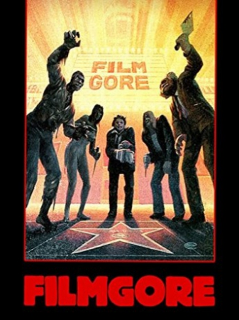

Filmgore (1983)

Country:United States, 85 minutes
Spoken languages:
Genres:Documentary, Horror
Director(s):Ken Dixon
Writer(s):
Video Codec:Unknown
Number: 2646
Tomatometer:

--

--
IMDb Rating:

Certification:
Storyline:
A bloody collection of film clips from many of the most violent films ever made. Driller killers, Plasmatic Perverts and Sadistic Slashers are just a few of the disturbed individuals starring in this morbid collage.
Cast:
Medium: Original DVD,
Comments: Part of: Full Moon Grindhouse Collection!
Loaned: No
Aspect ratio: Unknown